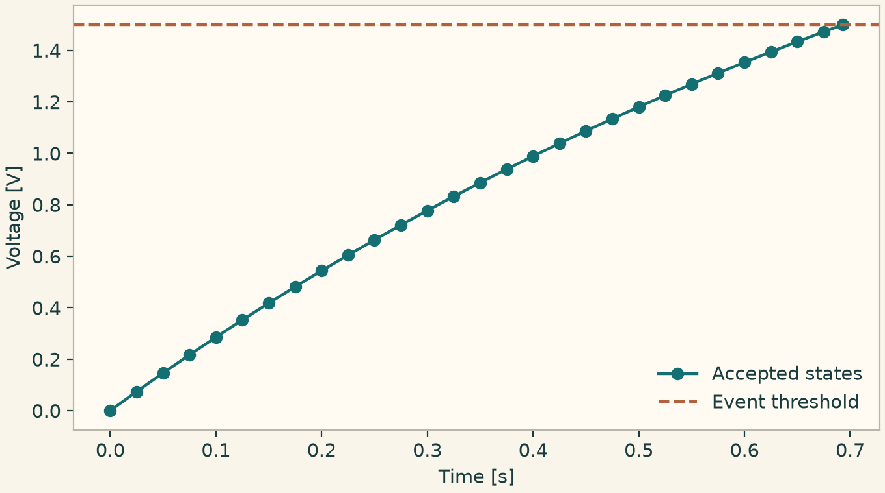

Docs › Executable numerical recipes › Declarations and execution contracts
10.1 Declarations and execution contracts
10.1.1 Inspect the IR, plan and compatibility error
Compile a concrete lumped model and inspect its IR. Run the model, then restore its resolved provider plan from the result metadata. The sample compatibility rejection carries the option and required capability as machine-readable fields.
This listing exercises NumericalIR, NumericalExecutionPlan, NumericalCompatibilityError.
from onesim.cad.geometry import LumpedDomain
from onesim.meshing import LumpedMesh
from onesim.numerics.discretization import (
LumpedParameters, Numerics, NumericalCompatibilityError,
NumericalExecutionPlan, NumericalIR,
)
from onesim.numerics.time import ClassicalRungeKutta4
from onesim.physics.systems import ThermalCapacitance
from onesim.simulation import Problem, Simulation
from onesim.simulation.initial_conditions import InitialValue
domain = LumpedDomain()
model = ThermalCapacitance(
domain=domain.system, heat_capacity=2, conductance=1,
ambient_temperature=293,
)
problem = Problem(
name="Plan audit", geometry=domain, physics=(model,),
initial_conditions=(InitialValue(model.temperature, 313),),
)
simulation = Simulation(
problem=problem, mesh=LumpedMesh(domain),
numerics=Numerics(
spatial=LumpedParameters(), time_integrator=ClassicalRungeKutta4()
),
)
ir = simulation.compile().numerical_ir(model)
assert isinstance(ir, NumericalIR)
print(ir.to_dict().keys())
result = simulation.run(start_time=0, end_time=0.2, time_step=0.02)
audit = result.result_set.metadata["numerical_plans"][model.model_id]
record = NumericalExecutionPlan.from_dict(audit["execution_plan"])
assert record.ir_content_sha256 == NumericalIR.from_dict(audit["numerical_ir"]).content_sha256
for requirement in record.stage_requirement_ids:
print(requirement, record.provider_for(requirement))
restored = NumericalExecutionPlan.from_dict(record.to_dict())
assert restored.content_sha256 == record.content_sha256
def check_backend(requested, available):
if requested not in available:
raise NumericalCompatibilityError(
f"Backend {requested} is unavailable",
kind="unimplemented", option=requested,
required_capabilities=("scalar:real",),
)
try:
check_backend("accelerator", {"cpu"})
except NumericalCompatibilityError as error:
assert error.option == "accelerator"
print(error.kind, error.required_capabilities)10.1.2 Call optional operator protocols
A provider can implement these protocols structurally. This small two-cell operator supplies time-dependent conditions, identifies facet ownership and invalidates a cached evaluation after a coefficient update. A notebook can use the same typed function with a provider that implements these methods.
This listing exercises OperatorConditions, OperatorFacetTopology, EvaluationCacheControl.
from onesim.numerics.discretization import (
EvaluationCacheControl, OperatorConditions, OperatorFacetTopology,
)
class TwoCellOperator:
def __init__(self):
self.conductivity = 2.0
self._cache = {}
def conditions(self, time):
return (("left", 300 + 10 * time), ("right", 290.0))
def facet_owners(self, facet):
return ((0,), (0, 1), (1,))[facet]
def invalidate_evaluation_cache(self):
self._cache.clear()
def heat_flux(self, time):
if time not in self._cache:
left, right = (value for _, value in self.conditions(time))
self._cache[time] = self.conductivity * (left - right)
return self._cache[time]
def report(conditions: OperatorConditions,
topology: OperatorFacetTopology,
cache: EvaluationCacheControl, time: float):
cache.invalidate_evaluation_cache()
return conditions.conditions(time), topology.facet_owners(1)
operator = TwoCellOperator()
assert operator.heat_flux(0.5) == 30
operator.conductivity = 4
values, owners = report(operator, operator, operator, 0.5)
assert values[0] == ("left", 305) and owners == (0, 1)
assert operator.heat_flux(0.5) == 6010.1.3 Stop on a custom event and inspect the selected time binding
The callback reads the voltage from the semantic state indexed by model and field identifiers. Run a terminal rising event with an independent cap on the time step. The provider binding reports the actual Runge–Kutta method and order.
This listing exercises TimeEventDefinition, TimeStepLimits, TimeExecutionBinding.
import numpy as np
import matplotlib.pyplot as plt
import onesimulation_plot_theme as theme
from onesim.cad.geometry import LumpedDomain
from onesim.meshing import LumpedMesh
from onesim.numerics.discretization import LumpedParameters, Numerics
from onesim.numerics.time import (
ClassicalRungeKutta4, TimeEventDefinition, TimeExecutionBinding, TimeStepLimits,
)
from onesim.numerics.time.selection.declared_time_provider import (
create_declared_time_provider,
)
from onesim.physics.systems import ResistorCapacitor
from onesim.simulation import ExecutionOptions, Problem, Simulation
from onesim.simulation.initial_conditions import InitialValue
domain = LumpedDomain()
rc = ResistorCapacitor(
domain=domain.system, resistance=2, capacitance=0.5, supply_voltage=3,
)
problem = Problem(
name="Custom event", geometry=domain, physics=(rc,),
initial_conditions=(InitialValue(rc.voltage, 0.0),),
)
def half_charge(time, state):
value = state[rc.model_id][rc.voltage.field_id]
return np.asarray(value).item() - 1.5
event = TimeEventDefinition(
"half-charge", half_charge, direction=1, terminal=True, value_tolerance=1e-10,
)
limits = TimeStepLimits(
maximum_step=0.025, stability_safety_factor=0.8, cfl_limit=0.4,
)
assert np.isclose(limits.bound(stability_step=0.2, courant_rate=40), 0.01)
method = ClassicalRungeKutta4()
provider = create_declared_time_provider(method)
binding = provider.numerical_execution_binding()
assert isinstance(binding, TimeExecutionBinding)
assert binding.order == 4
print(binding.method_id, binding.order)
result = Simulation(
problem=problem, mesh=LumpedMesh(domain),
numerics=Numerics(
spatial=LumpedParameters(), time_integrator=method,
step_limits=TimeStepLimits(maximum_step=0.025),
),
).run(
start_time=0, end_time=1.2, time_step=0.025,
execution_options=ExecutionOptions(events=(event,)),
)
assert abs(result.times[-1] - np.log(2)) < 2e-6
voltage = result.field(rc.voltage)
values = [np.asarray(voltage.at(t).values).item() for t in result.times]
theme.use_theme()
fig, ax = plt.subplots(figsize=(6.8, 3.8), layout="constrained")
ax.plot(result.times, values, "o-", label="Accepted states")
ax.axhline(1.5, linestyle="--", color=theme.COPPER, label="Event threshold")
ax.set(xlabel="Time [s]", ylabel="Voltage [V]")
ax.legend(frameon=False)
plt.show()

RC voltage up to the terminal half-charge event.